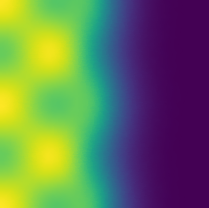
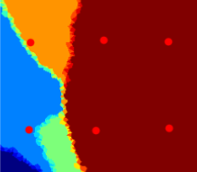
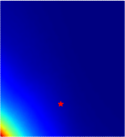
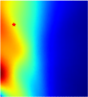
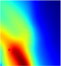
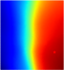

Machine Learning Scientist · Ph.D. · Salt Lake City, UT
Madison Cooley
I design physics-informed neural networks, neural operators, and surrogate models for simulation-heavy engineering problems. 4+ years building scientific ML models in PyTorch, JAX, and C++ on GPU clusters, plus ML for materials processing and semiconductor device simulation.
- Ph.D. in Computing, University of Utah, 2026
- 5 papers in SIAM J. Sci. Comput., TMLR, and ICLR
I’m based in Salt Lake City and looking for industry roles in machine learning research, applied science, and data science. Open to on-site roles in the Salt Lake City area or remote positions.
Featured research · TMLR 2026
Learning where to specialize
I led the development of a neural operator that learns where local experts should specialize and how to blend their predictions.
Why it matters. Many engineered systems, from layered materials to reacting flows, behave differently from one region to the next. In our heterogeneous Darcy flow and reaction–diffusion benchmarks, learning where to specialize reduced prediction error compared with a single global DeepONet.
Where each expert has the most influence


- 2
- 3
- 4
- 5
- 6
How to read these maps
How does a chemical concentration evolve when reactions occur on only one side of a domain?

Each color in the argmax map shows which expert has the highest weight at that location. Several experts specialize in different parts of the reacting left half, while one leads across much of the right. Expert 1 never has the highest weight in this example, but it still contributes wherever its weight is nonzero, helping blend the experts’ predictions into one solution. The dashed line marks the reaction interface at x = 1. The model learns the partitions from data without being told where that interface is.
View individual expert weights






Each map has its own weight scale. Warmer colors indicate higher weight within that map, and the endpoints are approximate. View the original Figure 9 maps.

Skills in practice
Choose a skill to see the projects where I used it. Numbers show how many examples each skill links to.